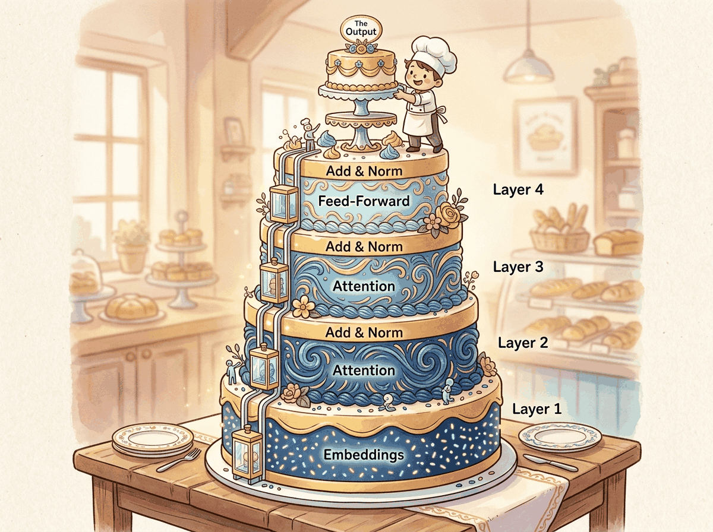
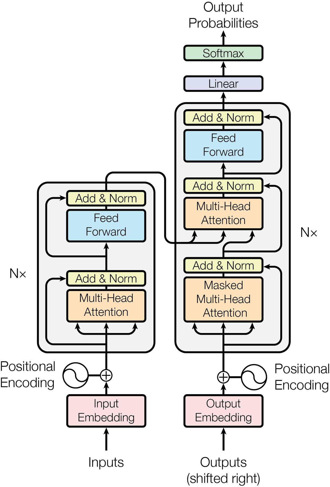
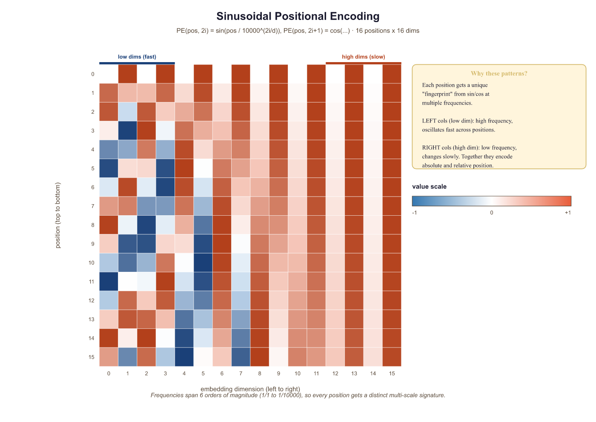
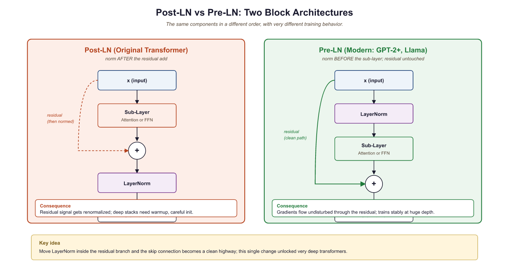

All you need is attention. And layer normalization. And positional encodings. And residual connections. And feed-forward networks. But mostly attention.
Norm, Perpetually Normalizing AI Agent
The Transformer's core insight is that attention alone, applied across all pairs of positions simultaneously, can capture dependencies of arbitrary range without the vanishing gradient problem that plagues RNNs. As we saw in Section 2.3a, multi-head self-attention provides the mechanism; this section assembles it into a complete architecture. The cost is quadratic in sequence length, a tradeoff that later sections of this module will address.
A Transformer block is just two ideas glued together: attention mixes information across positions, the FFN mixes information within each position, and residual connections plus LayerNorm keep gradients flowing through hundreds of stacked blocks. Everything else is bookkeeping.
3.1.1 The Paper That Changed Everything
The improvement is not magic, it is a capacity-vs-stability tradeoff. The gating branch SiLU(xW_gate) lets each FFN unit decide multiplicatively whether to fire, so the layer represents a piecewise-linear function with sharper feature selectors than a single ReLU/GELU stack of the same width. Shazeer (2020, "GLU Variants Improve Transformer") frames this as the multiplicative interaction giving the FFN a second-order Taylor term that pure ReLU networks must learn through depth. Labs hold parameter count fixed (the gate steals one third of the hidden width), so the gain is "free" capacity along the most expressive direction, not added compute.
The FFN is computing the same operation as attention but with static rather than dynamic keys and values. When the input activates neuron j (because xW₁ row-j exceeds zero after ReLU), the corresponding row of W₂ is added to the residual stream, like retrieving the value associated with a key match. The difference from attention: FFN keys and values are baked into the weights and cannot change at inference, while attention keys and values are recomputed from current context. This explains an empirical pattern: factual knowledge (Paris is the capital of France) lives in FFN layers and can be edited by patching individual FFN rows (Geva et al., 2021). Grammatical and syntactic patterns, which integrate information across positions, live in attention. The two are complementary memory systems at different timescales, not redundant.
This is the architecture inside every AI you have ever used. ChatGPT, Claude, Gemini, Llama: they are all Transformers. In June 2017, Vaswani et al. published "Attention Is All You Need," proposing a sequence-to-sequence model that dropped recurrence and convolutions altogether. At its core, the Transformer relies on a single mechanism repeated many times: scaled dot-product attention, combined with simple position-wise feed-forward networks. This section walks through the complete architecture, explaining not just what each component does, but why it exists and how each design choice shapes the flow of information through the network.
The original Transformer is an encoder-decoder model. The encoder reads the entire input sequence in parallel (no sequential bottleneck like an RNN), and the decoder generates the output sequence one token at a time, attending both to the encoder output and to previously generated tokens. While modern LLMs typically use only the decoder half, understanding the full architecture is essential. Many design principles carry over directly.
The Transformer's most underappreciated advantage is not attention itself; it is parallelism. An RNN processes tokens one at a time, making training time proportional to sequence length. The Transformer processes all tokens simultaneously during training, making it vastly more efficient on GPUs. This is why the Transformer scaled to billions of parameters while RNNs could not: the architecture matches the hardware.
"Attention Is All You Need" was almost titled "Transformers: Attention Networks." The name "Transformer" was suggested late in the writing process. A different title and the architecture might have been remembered by a much less evocative name.

3.1.2 Information Theory: The Language of Learning
Before we trace a token through the architecture, a quick reminder of the four information-theoretic quantities that recur throughout the rest of this book. Modern language modeling rests on those four: entropy (the inherent uncertainty of a distribution), cross-entropy (what we minimize during training), perplexity (the human-readable scorecard derived from cross-entropy), and KL divergence (the gap between two distributions, used in distillation and alignment). For a self-contained walk through definitions, formulas, and worked examples, see Appendix A.6 - Information Theory for Language Models. The transformer architecture in the next subsection assumes you understand these terms or have skimmed the appendix.
3.1.3 High-Level Architecture
The Transformer consists of two stacks: an encoder (N=6 identical layers) and a decoder (N=6 identical layers). Each encoder layer has two sub-layers: (1) a multi-head self-attention mechanism and (2) a position-wise feed-forward network. Each decoder layer has three sub-layers: (1) masked multi-head self-attention, (2) multi-head cross-attention over the encoder output, and (3) a position-wise feed-forward network. Every sub-layer is wrapped in a residual connection followed by layer normalization.

Prerequisites
This section assumes you understand scaled dot-product attention and multi-head attention from Section 2.3. Familiarity with the encoder-decoder framework from Section 2.1 and backpropagation from Section 0.2 is also expected. We reference tokenization concepts from Chapter 1 when discussing input processing.
3.1.4 Input Representation and Positional Encoding
The Transformer block we just sketched expects vectors as input, but text arrives as discrete token IDs. Two transformations bridge the gap: token embeddings turn integer IDs into learnable dense vectors, and positional encodings inject the order information that attention itself does not carry. We treat them separately because each addresses a different missing ingredient.
3.1.4.1 Token Embeddings
The first step is converting discrete tokens into continuous vectors. A learned embedding matrix $W_{E} \in R^{V \times d}$ maps each token index to a $d$-dimensional vector. In the original paper, $d = 512$ and $V \approx 37,000$ (BPE tokens for English-German translation). The embedding weights are multiplied by $\sqrt{d}$ to bring their scale in line with the positional encodings that are added next.
# Token embedding with scaling
import torch
import torch.nn as nn
class TokenEmbedding(nn.Module):
def __init__(self, vocab_size, d_model):
super().__init__()
self.embed = nn.Embedding(vocab_size, d_model)
self.scale = d_model ** 0.5
# Forward pass: define computation graph
def forward(self, x):
return self.embed(x) * self.scale
3.1.4.2 Why We Need Positional Encoding
Self-attention is a set operation: it is permutation-equivariant, meaning that if you shuffle the input tokens, the outputs shuffle in the same way. Without any notion of position, the model cannot distinguish "the cat sat on the mat" from "mat the on sat cat the." Positional encoding injects ordering information into the representation.
3.1.4.3 Sinusoidal Positional Encoding
The original paper uses a fixed (non-learned) encoding based on sine and cosine functions of different frequencies:
Here $pos$ is the position in the sequence and $i$ is the dimension index. Each dimension oscillates at a different frequency, forming a unique "barcode" for each position. The key property: for any fixed offset $k$, the encoding at position $pos + k$ can be written as a linear function of the encoding at position $pos$. This allows the model to learn relative position patterns through linear projections.
from torch import nn
import torch
# Sinusoidal positional encoding: alternate sin/cos at different frequencies
# so each position gets a unique, smoothly varying vector.
import math
class SinusoidalPE(nn.Module):
def __init__(self, d_model, max_len=5000):
super().__init__()
pe = torch.zeros(max_len, d_model)
position = torch.arange(0, max_len).unsqueeze(1).float()
div_term = torch.exp(
torch.arange(0, d_model, 2).float() * (-math.log(10000.0) / d_model)
)
pe[:, 0::2] = torch.sin(position * div_term)
pe[:, 1::2] = torch.cos(position * div_term)
self.register_buffer('pe', pe.unsqueeze(0)) # (1, max_len, d_model)
# Forward pass: define computation graph
def forward(self, x):
# x: (batch, seq_len, d_model)
return x + self.pe[:, :x.size(1)]
GPT-2 and many later models use learned positional embeddings instead, which are simply an additional embedding table indexed by position. Empirically, both approaches work comparably for training-length sequences, but sinusoidal encodings can extrapolate to longer sequences more gracefully. Modern approaches like RoPE (Rotary Position Embedding) combine the best of both worlds and are discussed in Section 3.3.

3.1.5 Scaled Dot-Product Attention (Revisited)
We covered attention in Chapter 2, but let us revisit it through the lens of the full Transformer. The attention function maps a query and a set of key-value pairs to an output. All are vectors. The output is a weighted sum of the values, where each weight is determined by the compatibility of the query with the corresponding key:
The division by $\sqrt{d_k}$ is crucial. Without it, when $d_{k}$ is large, the dot products grow large in magnitude, pushing the softmax into regions where it has extremely small gradients (the saturation problem). Vaswani et al. provide an elegant information-theoretic argument: if the components of Q and K are independent random variables with mean 0 and variance 1, then their dot product has mean 0 and variance $d_{k}$. Dividing by $\sqrt{d_k}$ restores unit variance.
Without scaling, dot products grow in magnitude as $d_{k}$ increases. For $d_{k}$ = 64, dot products have a standard deviation of 8, which pushes many softmax inputs into extreme tails where gradients are nearly zero. Dividing by sqrt($d_{k}$) = 8 restores the standard deviation to 1, keeping the softmax in its sensitive regime where small changes in input produce meaningful changes in output.
The visualization metaphor of attention as a spotlight is so popular that readers conclude high-weight tokens are the ones the model "thinks are important." Mechanically, attention is a weighted average over value vectors; the weights are similarity scores between query and key projections, not a measure of intrinsic token importance. Many attention heads attend strongly to delimiters, the first token (a "null" sink), or the previous token, because those positions are useful aggregation points, not because they carry the answer. Treat attention weights as routing decisions, not as explanations of the model's reasoning (Jain & Wallace, 2019; Bibal et al., 2022).
Algorithm: Scaled Dot-Product Attention (single head)
Input: X in R^{B x T x d_model}, learned matrices W_Q, W_K, W_V, W_O in R^{d_model x d_model},
optional mask M in {0, -inf}^{T x T}
Output: Y in R^{B x T x d_model}
// 1. Project inputs to query, key, value subspaces
Q := X @ W_Q // shape (B, T, d_k)
K := X @ W_K // shape (B, T, d_k)
V := X @ W_V // shape (B, T, d_v)
// 2. Compute scaled similarity scores
S := Q @ K^T / sqrt(d_k) // shape (B, T, T)
// 3. Apply causal or padding mask (additive in log-space)
If M is not None:
S := S + M // -inf at disallowed positions
// 4. Row-wise softmax produces a probability distribution per query
A := softmax(S, axis = -1) // attention weights, rows sum to 1
// 5. Weighted sum of values
Z := A @ V // shape (B, T, d_v)
// 6. Output projection (identity if d_v = d_model)
Y := Z @ W_O // shape (B, T, d_model)
Return YThis is the canonical attention computation from Vaswani et al., "Attention Is All You Need" (NeurIPS 2017, arXiv:1706.03762). Time and memory are both $O(T^2 d)$ because of the explicit $T \times T$ score matrix S. Section 3.4 shows how FlashAttention reorders steps 2 to 5 to compute the same Y without ever materializing S in HBM.
3.1.5.1 Multi-Head Attention
Instead of performing a single attention function with $d$-dimensional keys, values, and queries, the Transformer linearly projects them $h$ times with different learned projections, performs attention in parallel on each projection, concatenates the results, and projects again:
With $h = 8$ heads and $d = 512$, each head operates on $d_{k} = d_{v} = 64$ dimensions. This is computationally equivalent to single-head attention with $d = 512$, but it allows the model to jointly attend to information from different representation subspaces at different positions. One head might learn syntactic dependencies while another captures semantic relatedness.
from torch import nn
import torch
# Multi-head attention: split d_model into n_heads parallel subspaces,
# compute scaled dot-product attention in each, concatenate, and project.
class MultiHeadAttention(nn.Module):
def __init__(self, d_model, n_heads):
super().__init__()
assert d_model % n_heads == 0
self.d_k = d_model // n_heads
self.n_heads = n_heads
self.W_q = nn.Linear(d_model, d_model)
self.W_k = nn.Linear(d_model, d_model)
self.W_v = nn.Linear(d_model, d_model)
self.W_o = nn.Linear(d_model, d_model)
def forward(self, q, k, v, mask=None):
B, T, C = q.shape
# Project and reshape: (B, T, d) -> (B, h, T, d_k)
q = self.W_q(q).view(B, T, self.n_heads, self.d_k).transpose(1, 2)
k = self.W_k(k).view(B, -1, self.n_heads, self.d_k).transpose(1, 2)
v = self.W_v(v).view(B, -1, self.n_heads, self.d_k).transpose(1, 2)
# Scaled dot-product attention
scores = (q @ k.transpose(-2, -1)) / (self.d_k ** 0.5)
if mask is not None:
scores = scores.masked_fill(mask == 0, float('-inf'))
attn = torch.softmax(scores, dim=-1)
# Combine heads
out = (attn @ v).transpose(1, 2).contiguous().view(B, T, C)
return self.W_o(out)
# Sanity check: run a forward pass on random tensors
mha = MultiHeadAttention(d_model=512, n_heads=8)
x = torch.randn(32, 128, 512) # (batch, seq, d_model)
out = mha(x, x, x)
print("in: ", x.shape, "out: ", out.shape)
# MultiHeadAttention from scratch using PyTorch
# This is the version every modern Transformer uses internally.
import torch
import torch.nn as nn
import torch.nn.functional as F
class MultiHeadAttention(nn.Module):
"""Scaled dot-product multi-head attention with an optional causal mask."""
def __init__(self, d_model: int, n_heads: int, dropout: float = 0.0):
super().__init__()
assert d_model % n_heads == 0, "d_model must be divisible by n_heads"
self.d_model = d_model
self.n_heads = n_heads
self.head_dim = d_model // n_heads
# One big linear for Q, K, V together (more efficient than 3 separate)
self.qkv = nn.Linear(d_model, 3 * d_model, bias=False)
self.out_proj = nn.Linear(d_model, d_model, bias=False)
self.dropout = nn.Dropout(dropout)
def forward(self, x: torch.Tensor, mask: torch.Tensor | None = None) -> torch.Tensor:
B, T, C = x.shape
# Project + split into Q, K, V; reshape for per-head attention
qkv = self.qkv(x) # (B, T, 3*C)
q, k, v = qkv.chunk(3, dim=-1) # each (B, T, C)
q = q.view(B, T, self.n_heads, self.head_dim).transpose(1, 2)
k = k.view(B, T, self.n_heads, self.head_dim).transpose(1, 2)
v = v.view(B, T, self.n_heads, self.head_dim).transpose(1, 2)
# Scaled dot-product attention
scores = (q @ k.transpose(-2, -1)) / (self.head_dim ** 0.5)
if mask is not None:
scores = scores.masked_fill(mask == 0, float("-inf"))
attn = F.softmax(scores, dim=-1)
attn = self.dropout(attn)
# Apply attention and merge heads back
y = attn @ v # (B, n_heads, T, head_dim)
y = y.transpose(1, 2).contiguous().view(B, T, C) # (B, T, d_model)
return self.out_proj(y)
MultiHeadAttention(d_model=512, n_heads=8) and call on a tensor of shape (B, T, d_model); output has the same shape.)The five-line scoring + masking + softmax block compiles down to a single PyTorch call that dispatches to FlashAttention 2/3 when the shapes and dtypes match. Use it inside your own module rather than the manual loop.
import torch.nn.functional as F
# Drop-in replacement for the scaled dot-product block above
y = F.scaled_dot_product_attention(q, k, v, is_causal=True,
dropout_p=self.dropout.p if self.training else 0.0)MultiHeadAttention(d_model=512, n_heads=8)(x, x, x) in the sanity-check pattern from Code Fragment 3.1.3.)The implementation above builds multi-head attention from scratch for pedagogical clarity. In production, use torch.nn.MultiheadAttention (built into PyTorch), which provides an optimized implementation with FlashAttention support:
# Production equivalent using PyTorch built-in
import torch.nn as nn
mha = nn.MultiheadAttention(embed_dim=512, num_heads=8, batch_first=True)
output, attn_weights = mha(query, key, value, attn_mask=mask)For full model pipelines, Hugging Face Transformers (install: pip install transformers) provides pre-trained multi-head attention as part of complete model architectures.
A single attention head computes one set of attention weights. If position 5 needs to attend to both position 2 (for syntax) and position 8 (for coreference), a single softmax distribution forces a compromise. Multiple heads let the model maintain multiple, independent attention patterns simultaneously. Think of each head as a different "question" the model can ask about the context.
It is common to see attention described as "the model focuses on the most important words." This framing is misleading. Attention computes a weighted linear combination of all value vectors, where the weights are determined by query-key compatibility. The model does not decide which words are "important" in any human sense; it computes which positions are useful for predicting the next token given the current query. A high attention weight on a word does not mean that word is semantically important. It means the key at that position is well-aligned with the current query in the learned projection space. Attention patterns often look nothing like what a human would consider "important." Some heads attend primarily to the previous token, others to punctuation, and others to positional patterns that have no obvious linguistic interpretation.
3.1.6 Position-Wise Feed-Forward Network
After every attention sub-layer, the Transformer applies a simple two-layer feed-forward network to each position independently and identically:
This is applied to each token position separately (hence "position-wise"). The inner dimension is typically 4 times the model dimension: with $d = 512$, the inner layer has $d_{ff} = 2048$ units. The FFN accounts for roughly two-thirds of the parameters in each Transformer layer.
A quick numeric trace through a tiny FFN (d=3, d_ff=4) shows how the two linear layers and ReLU interact:
# Numeric example: FFN forward pass on a single token
import torch, torch.nn.functional as F
x = torch.tensor([0.5, -1.0, 0.8]) # one token, d_model=3
W1 = torch.tensor([[1, 0, -1, 0.5],
[0, 1, 0, -1],
[0.5, -0.5, 1, 0]]).float() # (3, 4)
hidden = F.relu(x @ W1) # project up, then ReLU
print(f"After W1 + ReLU: {hidden.tolist()}")
# After W1 + ReLU: [0.9, 0.0, 0.3, 1.25] (negatives clipped to 0)
W2 = torch.randn(4, 3) * 0.5 # (4, 3) project back down
out = hidden @ W2
print(f"FFN output shape: {out.shape}") # back to d_model=3Why is the FFN important? Attention allows tokens to mix information across positions, but it is a linear operation over the value vectors (the softmax produces convex combination weights). The FFN provides the per-token nonlinear transformation that is essential for the model to learn complex functions. Think of attention as routing information and the FFN as processing it.
from torch import nn
# Position-wise feed-forward network: expand to d_ff, apply ReLU,
# project back to d_model. Applied identically at every sequence position.
class FeedForward(nn.Module):
def __init__(self, d_model, d_ff, dropout=0.1):
super().__init__()
self.net = nn.Sequential(
nn.Linear(d_model, d_ff),
nn.ReLU(),
nn.Dropout(dropout),
nn.Linear(d_ff, d_model),
nn.Dropout(dropout),
)
# Forward pass: define computation graph
def forward(self, x):
return self.net(x)
If attention is the "reading" step (gathering information from across the sequence), the FFN is the "thinking" step (processing gathered information for each position independently). Geva et al. (2021) showed that FFN layers act as learned key-value memories: each row of the first weight matrix detects a pattern, and the corresponding row of the second weight matrix stores associated knowledge. When the model "knows" that Paris is the capital of France, that knowledge is likely stored in an FFN layer, not in attention.
Most modern Transformers replace the ReLU FFN with a gated variant. The SwiGLU
activation (used in LLaMA, PaLM, and others) splits the first linear projection into two
branches and multiplies them element-wise:
FFN(x) = (xW1 ⊙ SiLU(xWgate)) W2.
This consistently improves performance at a modest increase in parameter count.
3.1.7 Residual Connections
Every sub-layer in the Transformer is wrapped with a residual (skip) connection:
Residual connections, introduced in ResNet (He et al., 2016), solve the degradation problem in deep networks: as you add more layers, training loss can increase because the optimization landscape becomes harder to navigate. A residual connection provides a gradient highway that allows gradients to flow directly from the output back to earlier layers without attenuation.
3.1.7.1 The Information-Theoretic View
From an information flow perspective, residual connections ensure that the original input to each layer is preserved. Each sub-layer only needs to learn the delta (the difference between the desired output and the input). This is a much easier optimization target. If a layer has nothing useful to add, it can learn to output near-zero, effectively becoming an identity function. Without residuals, each layer must learn to pass through all information, including what it does not modify.
In a Transformer with $N$ layers, the residual connections create $2^{N}$ possible paths through the network (each sub-layer can be either included or skipped). This ensemble-like behavior helps explain the robustness of deep Transformers.
3.1.8 Layer Normalization
Layer normalization (Ba, Kiros, and Hinton, 2016) normalizes the activations across the feature dimension for each individual token:
where $\mu$ and $\sigma$ are the mean and standard deviation computed across the feature dimensions of a single token, $\gamma$ and $\beta$ are learned scale and shift parameters, and $\epsilon$ is a small constant for numerical stability.
A quick numeric example makes the centering and scaling concrete:
# Numeric example: LayerNorm on a single token's feature vector
import torch
x = torch.tensor([1.0, 2.0, 3.0, 4.0]) # one token, 4 features
mu = x.mean() # 2.5
sigma = x.std(unbiased=False) # 1.118
normed = (x - mu) / (sigma + 1e-5)
print(f"Input: {x.tolist()}")
print(f"Mean: {mu:.2f}, Std: {sigma:.3f}")
print(f"Output: {normed.round(decimals=3).tolist()}")
# Output: [-1.342, -0.447, 0.447, 1.342] (zero mean, unit variance)3.1.8.1 Pre-LN vs. Post-LN
The original paper applies layer normalization after the residual addition (Post-LN):
LayerNorm(x + SubLayer(x)). Most modern Transformers use Pre-LN,
applying normalization before the sub-layer:
x + SubLayer(LayerNorm(x)).
| Property | Post-LN (Original) | Pre-LN (Modern) |
|---|---|---|
| Gradient scale | Depends on depth; can explode | Roughly constant across layers |
| Warmup required? | Yes, critical for stability | Often trains without warmup |
| Final performance | Slightly higher ceiling (some studies) | Slightly lower but more stable |
| Used in | Original Transformer, BERT | GPT-2, GPT-3, LLaMA, most modern LLMs |
Pre-LN is the default for good reason: Post-LN training can diverge catastrophically without learning rate warmup and careful initialization. If you are building a new model and have no compelling reason to use Post-LN, choose Pre-LN. When using Pre-LN, remember to add a final layer normalization after the last Transformer block (before the output projection), since the sub-layer output is not normalized.
3.1.8.2 RMSNorm: The Modern Alternative
While LayerNorm has served Transformers well since the original paper, most modern LLMs (including LLaMA, Mistral, Gemma, and Qwen) have switched to RMSNorm (Root Mean Square Layer Normalization), introduced by Zhang and Sennrich (2019). RMSNorm simplifies LayerNorm by removing the mean-subtraction step and normalizing only by the root mean square of the activations:
The key difference from standard LayerNorm is the absence of the re-centering operation (subtracting the mean). LayerNorm computes both the mean and variance, subtracts the mean, then divides by the standard deviation. RMSNorm skips the mean computation entirely, dividing only by the root mean square. This simplification has two practical benefits. First, it is approximately 10 to 15% faster than LayerNorm because it requires fewer reduction operations on the GPU. Second, empirical results show that the re-centering step contributes little to training stability; the scale normalization alone is sufficient. The learned parameter $\gamma$ (a per-feature gain vector) allows the network to recover any needed scaling, just as in LayerNorm, but there is no learned bias $\beta$.
The adoption of RMSNorm in production LLMs is now nearly universal. Meta's LLaMA family, Mistral, Google's Gemma, and many other architectures all use RMSNorm with Pre-LN placement. If you are implementing a Transformer from scratch today, RMSNorm with Pre-LN is the recommended default.
The PyTorch implementation of RMSNorm is straightforward. The module stores a learnable gain
vector weight (one element per feature dimension) and applies the RMS normalization
formula during the forward pass. Note the absence of a bias parameter and the absence of
mean subtraction, both of which distinguish RMSNorm from standard LayerNorm. Modern versions
of PyTorch (2.4 and later) include torch.nn.RMSNorm as a built-in module, but the
manual implementation below is instructive and remains common in research codebases.
# RMSNorm: normalize by root-mean-square instead of mean+variance.
# Cheaper than LayerNorm (skips the mean subtraction) with similar quality.
import torch
import torch.nn as nn
class RMSNorm(nn.Module):
"""Root Mean Square Layer Normalization (Zhang & Sennrich, 2019)."""
def __init__(self, dim: int, eps: float = 1e-6):
super().__init__()
self.eps = eps
self.weight = nn.Parameter(torch.ones(dim)) # learnable gain (gamma)
def forward(self, x: torch.Tensor) -> torch.Tensor:
# Compute RMS: sqrt(mean(x^2) + eps)
rms = torch.sqrt(x.pow(2).mean(dim=-1, keepdim=True) + self.eps)
# Normalize and apply learnable scale
return (x / rms) * self.weight
# Usage: drop-in replacement for nn.LayerNorm in a Transformer block
norm = RMSNorm(dim=4096) # e.g., LLaMA 7B hidden dim
x = torch.randn(2, 128, 4096) # (batch, seq_len, hidden_dim)
out = norm(x) # same shape: (2, 128, 4096)
# Compare with PyTorch built-in (available in PyTorch 2.4+):
# builtin_norm = torch.nn.RMSNorm(4096, eps=1e-6)
PyTorch 2.4 and later include a built-in torch.nn.RMSNorm that is fused for GPU efficiency. It is a drop-in replacement for the manual implementation above:
# Built-in RMSNorm (PyTorch 2.4+), fused for GPU efficiency
import torch
norm = torch.nn.RMSNorm(4096, eps=1e-6) # same API as the manual version
x = torch.randn(2, 128, 4096)
out = norm(x) # (2, 128, 4096), normalized per token
print(f"Output shape: {out.shape}, RMS per token ~ 1.0: {out.pow(2).mean(-1)[0,0]:.3f}")
You are halfway through this section. Let us pause and consolidate the core components you have covered:
- Positional encoding injects ordering information into a set-like architecture.
- Multi-head attention lets each token query every other token through multiple independent projections.
- Feed-forward networks provide per-token nonlinear processing and store factual knowledge.
- Residual connections create gradient highways and enable depth.
- Layer normalization (Pre-LN with RMSNorm) stabilizes training.
These five components, repeated N times, form the core of every modern Transformer. The remaining topics (weight initialization, causal masking, the KV cache, the complete forward pass, and the residual stream) are advanced details that deepen your understanding but build on the foundation above. If you need a break, this is a natural stopping point.
What's Next?
In the next part of this section, Section 3.1b: Transformer Init, Causal Mask & Forward Pass, we assemble the components into a working decoder: how to initialize weights so signal flows cleanly through many layers, how the causal mask makes self-attention autoregressive, what the complete forward pass looks like in code, and how to count parameters for a given architecture.